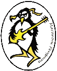
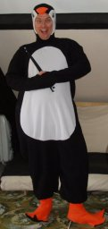
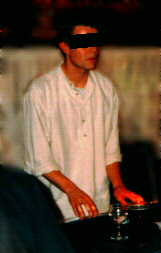
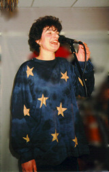

Meet the Band

Macaroni Penguins have been active on the Bristol live scene since 1995,
playing an eclectic mix of covers and original material to appreciative audiences.
In the early days we became regulars at The Prom in Bristol, more recently we have played
quite a few gigs at The Old Spot in Dursley (CAMRA National Pub of the Year 2007),
and have provided the non-liquid entertainment at several Beer Festivals.
Although based around North Bristol we have played as far afield as Cardiff, the Isle of Wight (boat) and Denmark (plane) -
a gig by train awaits.
 Mark sings and plays guitar.
Mark sings and plays guitar.
Music has been in Mark's blood from an early age, after an unfortunate incident
where a short-sighted doctor mistook a piccolo for a syringe.
His record for breaking strings is three, during Jumping Jack Flash at Gig 78.
Mark plays a Fender Telecaster through a Korg AX30G pedal and a Vox AC 15 amp.
His favourite colour is teal and his blood group is A♭.
 Slug plays bass and occasionally sings some backing vocals.
Slug plays bass and occasionally sings some backing vocals.
Slug has been playing bass ever since the band started and the only person
we knew who had a bass was willing to lend it to him.
In his spare time he studies the universe.
Slug plays a red Aria Pro II Integra bass using a red thumb pick through a red Zoom B2.1u Bass pedal
and a Peavey TKO 75 amp.
His favourite colours are Black & Decker.
 Mike plays guitar and does the band choreography.
Mike plays guitar and does the band choreography.
Mike has been playing guitar since it was invented in the middle ages,
although he can sometimes take advice too literally, for example the picture
on the right was taken after he was instructed to "break a leg"
before a gig.
Mike vigorously plays a Fender Stratocaster guitar through a Peavy amp.
His favourite keys are A and Caps Lock.

Tim plays drums and since he bought a Renault Espace is defacto roadie.
Tim started drumming because he wanted to annoy his children. His baptism of fire was
to join us on stage at Frocester 2006 to play a 2 hour set in front of several thousand people.
He has since become our regular drummer.
Tim plays a Roland TD-20K and uses a Roland KC-300 keyboard amp as a
stage monitor.
His favourite rolls are the Buzz, the Five Stroke and the Cheese
and Tomato.
— extract from A Brief History from Tim, Penguins Books, 2012
Lest We Forget...

Fred played keyboards with the band in 1995.
Fred was one of the founder members of the band, but fled the country when his
keyboard was threatended with reposession to make up for unpaid parking fines.
He still plays the odd guerilla gig with us.
Fred plays some kind of Yamaha Clavinova through the PA.
His blood group is Gammeldansk.
 Michelle played drums from 1995 to 2006.
Michelle played drums from 1995 to 2006.
Michelle has a genetic predisposition for drumming - as we discovered when we played
her wedding with seven different drummers.
Michelle hits a Premier APK so hard we can barely keep up. Her favourite song is not Basket Case.

Liz sang and reminded Mark what the lyrics are from 1995 to 2015.
Liz is a multi-instrumentalist and in the past has been called on to play guitar, bass and drum machine at various gigs
(although not at the same time), but her longest stint was playing keyboards.
When not performing with the band, Liz enjoyed overthrowing South American dictatorships
and gardening.
Liz's favourite colour is heliotrope.
All Our Other Drummers...
A Roland TR-505, an Alesis SR-16, Geraint, Andy, Daz, Sam, Simon, Steve, Chris and Sam (a different one).
© 1995-2018 Macaroni Penguins